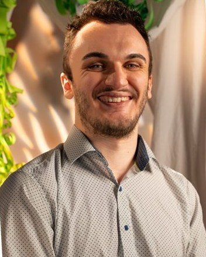
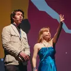
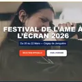
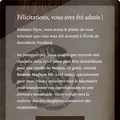
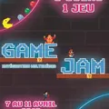
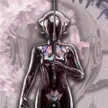

Feuille de service 2026

Alexis Labine
Intégrateur multimédia · Communication numérique
Je fais le pont entre l’idée, l’équipe et l’écran.
- Rôle
- Étudiant, Cégep de Jonquière
- Lieu
- Jonquière (Québec)
- Courriel
- labinealexis@gmail.com
Méthode
Je planifie, je coordonne, j’intègre, et je suis là le jour J.
- Je planifie. De nature analytique, j’organise et j’anticipe.
- Je coordonne. Je fais le lien entre les besoins des clients et l’équipe technique.
- J’intègre. HTML, CSS/SCSS, JavaScript, PHP/MySQL, WordPress, Figma.
- Je suis là le jour J. Sur le terrain, je m’adapte vite aux imprévus.
Réalisations
-

Projet vedette · Édition 2026 · Implication étudiante
Festival de l’Âme à l’Écran (DAE)
Un festival de films étudiants de trois jours, avec des films d’écoles de partout au Québec.
Coordination · Communication
-

Projet 02 · Éditions 2026-2027 · Implication étudiante
Le site du festival : avant et après
Le site de l’édition 2026, réalisé en équipe de six, et celui de l’édition 2027, avec son back-office, que je développe seul.
Web
-

Projet 03 · Hiver 2026 · Projet de session
Rentrée Magique 101
Un site WordPress qui guide les nouveaux élèves d’une école de sorcellerie.
Web
-
Projet 04 · Automne 2026 · Projet de session
TonTour
Concept d’app mobile (UI/UX) de file d’attente virtuelle pour les urgences du Saguenay.
Web
-

Projet 05 · Hiver 2025 · Projet de session
Game Jam : affiche et mapping vidéo
Une affiche pour le Game Jam d’Intégration multimédia, reprise en mapping vidéo projeté en classe.
Graphisme · Communication
-
Projet 06 · Automne 2026 · Mandat client
Site de l’École de musique du Bas-Saguenay
Le site de l’École de musique du Bas-Saguenay, avec un parcours d’inscription en ligne.
Coordination · Web · Graphisme · Communication
-

Projet 07 · Automne 2025 · Projet de session
Timeline : Zero
La direction artistique d’un jeu cyberpunk imaginé de A à Z.
Graphisme
-
Pièces courtes · Hiver 2025 · Exercices
Phoenix, NOVA, Ville néon
Un logo animé, une affiche publicitaire et un photomontage.
Graphisme
Matériel
Design
- Photoshop
- Illustrator
- XD
- Figma
- After Effects
Web
- HTML5
- CSS/SCSS
- JavaScript (GSAP)
- PHP/MySQL
- WordPress
- Bootstrap
3D et temps réel
- Unreal Engine
- Unity
Humaines : coordination de projets et d’événements · travail d’équipe · organisation et planification · autonomie et sens des responsabilités · adaptation rapide
Langues : français (langue maternelle) · anglais (langue seconde)
Parcours
-
Depuis octobre 2025
Implication étudiante et coordination de projets multimédias — Cégep de Jonquière
Festival de l’Âme à l’Écran : webmaster, comité de communication. Conseil ATM : représentant des étudiants d’Intégration multimédia.
-
Depuis juin 2026
Journalier étudiant — Produits Kruger, Crabtree
-
Juin 2021 à janvier 2026
Commis multifonctionnel — IGA famille Guilbault, Rawdon
-
Août 2024 à juin 2027
Techniques d’intégration multimédia — Cégep de Jonquière
-
Août 2022 à décembre 2023
DEP en cuisine — École hôtelière de Lanaudière, Joliette
-
2015 à 2020
DES — Collège Champagneur, Rawdon